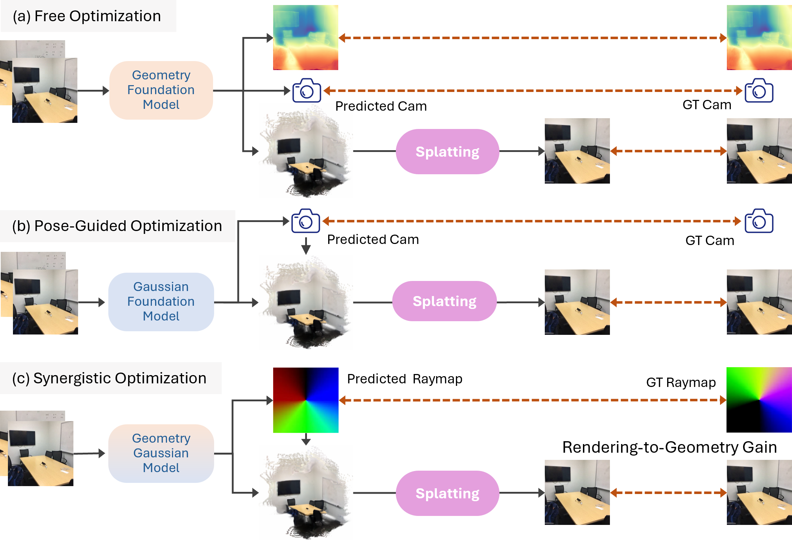
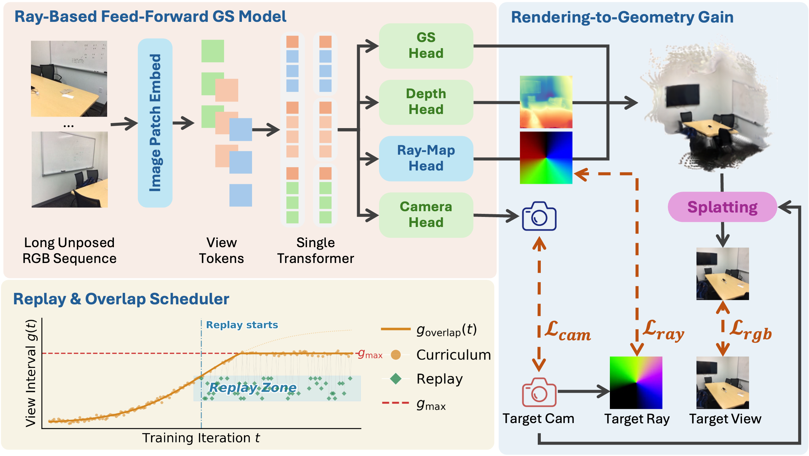

Method Overview
Problem Formulation
Overview of our synergistic pose-free framework for feed-forward 3D reconstruction. Our method effectively suppresses the pose drift problem, especially in long-sequence settings. Left: representative failure cases of existing methods under pose drift. Right: our pipeline and outputs (camera poses and 3D Gaussians).

Our synergistic framework for "Rendering-to-Geometry Gain". Unlike previous methods that optimize geometry and pose in isolation, our approach establishes a positive feedback loop—which we term "Rendering-to-Geometry Gain"—where appearance consistency serves as a powerful geometric prior. This synergy effectively resolves parameter ambiguity and suppresses drift in extended sequences.

Method
NoDrift3R, overview of the Synergistic Framework. (a) Ray-Based Feed-Forward GS Model. We employ a single transformer (Vallina DINOv2 model), followed by Gaussian Head, Depth Head, Ray-Map Head, and Camera Head. (b) A Raymap-Guided Coupling Module for "Rendering-to-Geometry Gain". (c) Our Replay & Overlap Scheduler leads to robust performance across arbitrary intervals.
